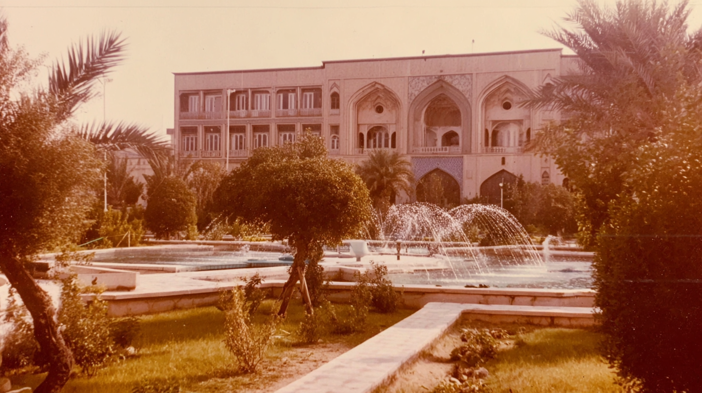
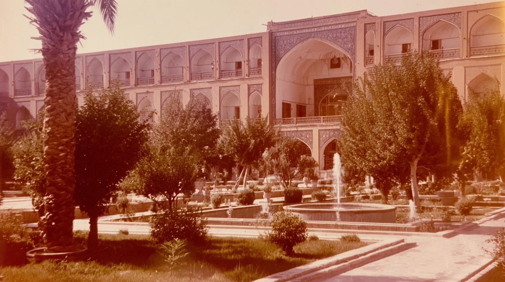
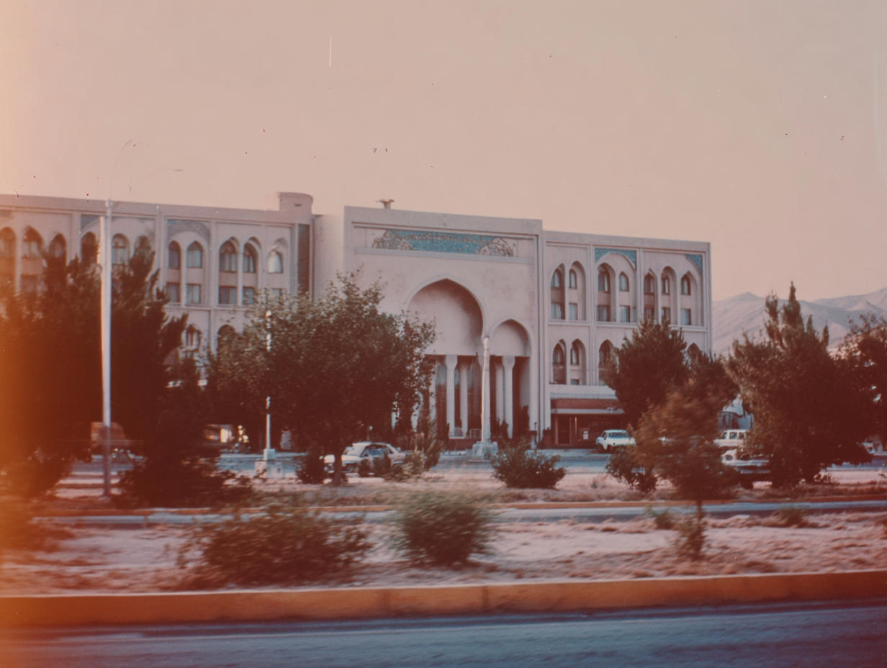
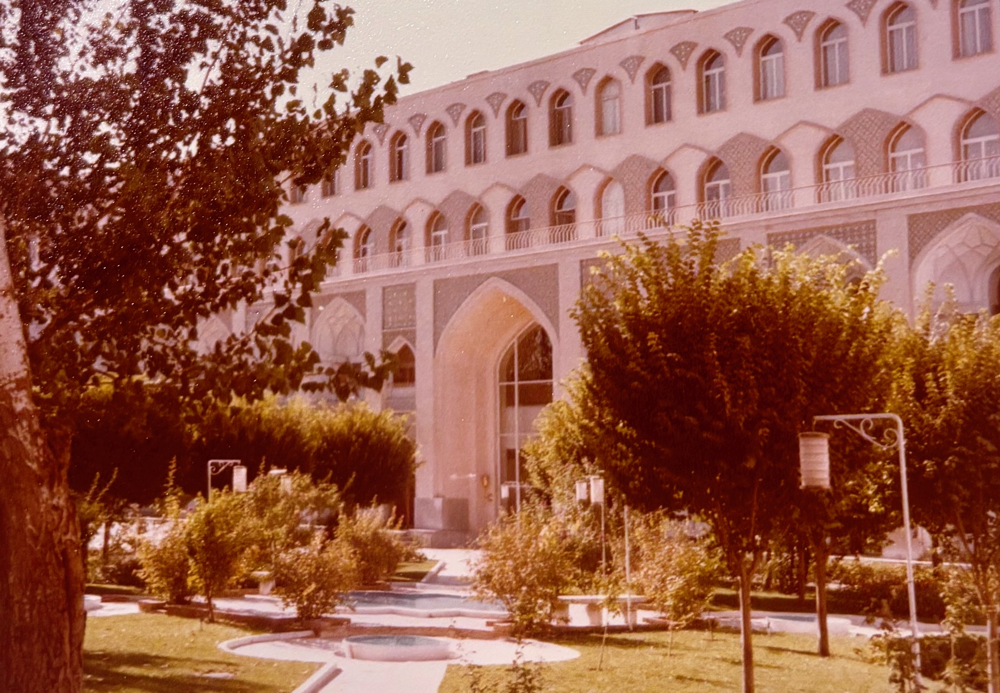

A large arched building faces a wide street with sparse trees and a few cars, washed in hazy sepia light.
Palm trees frame a
multi-story building with
arched windows and a tall
central entrance.
A grand arched façade with parked cars and low shrubs, mountains faintly visible behind.
vintage photo of hotel, imperfect composition, cinematic style, high quality and texture, 35mm kodachrome, muted natural colors, low contrast grading, soft highlights, hazy atmosphere, arid heat. Light film grain, organic texture, low digital sharpness, no vivid colors. Shot like contemporary cinema, realistic, alive, subtle faded blurry shutter motion.
A wide building with decorative blue tile panels and a deep central arch, seen across a divided road.